সবার আগে আমি আমার বেস্ট ফ্রেন্ড দের সাথে আপনাকে পরিচয় করিয়ে দিই !
সবার আগে আমার প্রথম বেস্টফ্রেন্ড ইউসুফ ( নয়ন বন্ড ) আমি ছোটবেলা থেকে ওর সাথেই খেলতাম , ফাইট করতাম , মারামারি শয়তানি , দুষ্টামি সব দুইজন মিলেই শিখা আর কই । আর আমরা দুজন এলাকার সবথেকে সইতান (দুষ্টু) চিলাম । এলাকার সবাইকে জালাইতে থাকতাম । আর এটাই ছিলো আমাদের কাজ । বিশেষ করে পরের গাছের ফল ফুল চুরি করতে আমরা ভালোবাসতাম । এই কাজটা আমাদের প্রথম ভালোবাসা ছিলো।
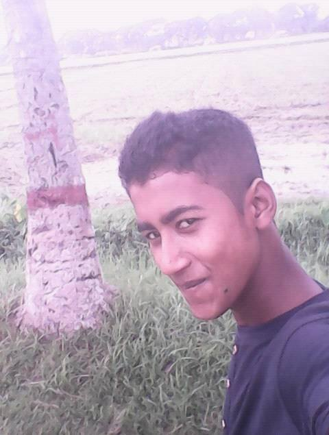
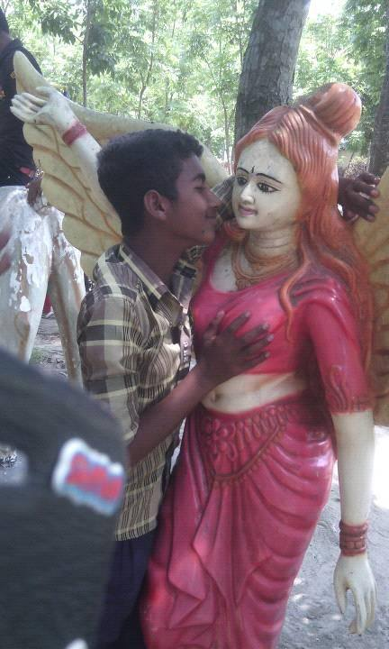
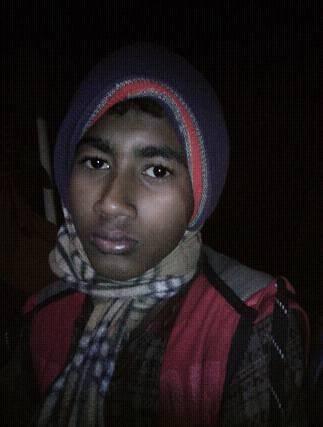
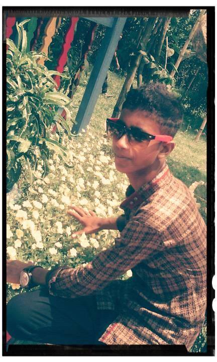
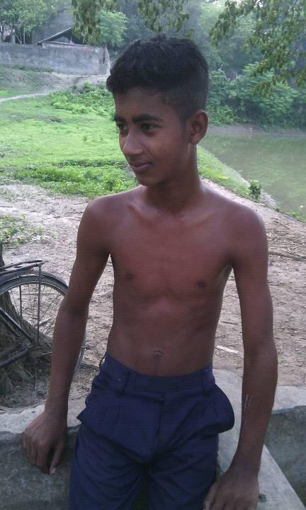 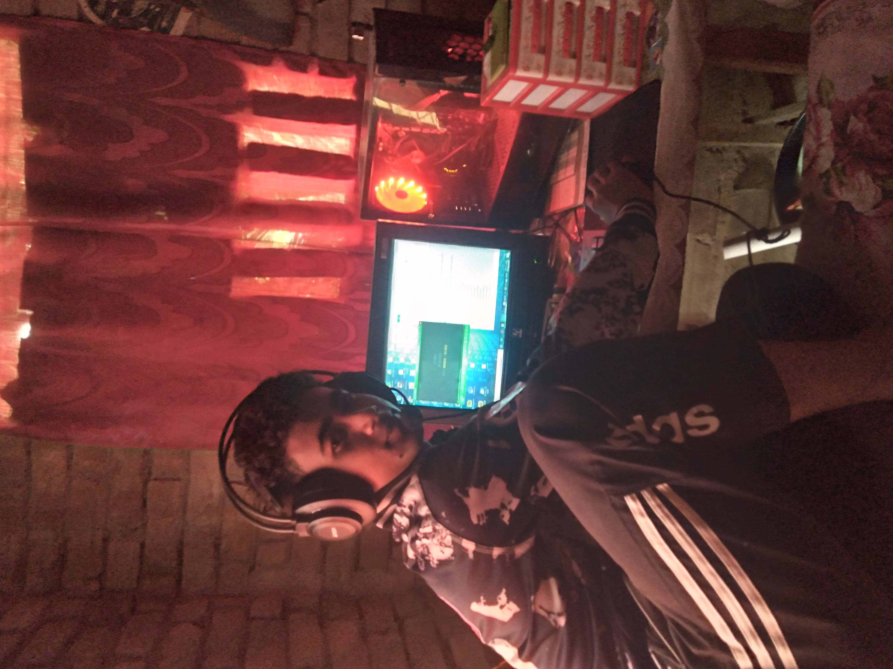 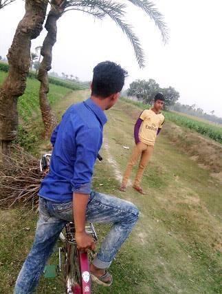 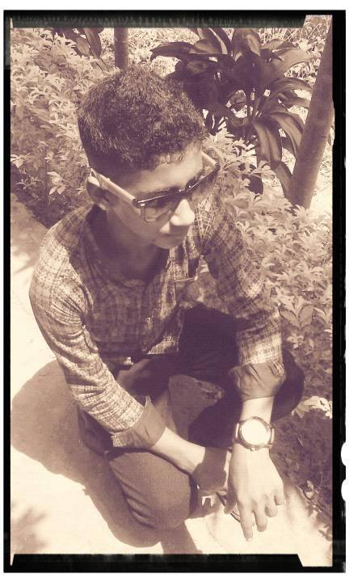
আমরা যখন ক্লাস থ্রিতে পড়ি তখন ও মারদ্রাসাই পড়তে যাওয়াতে আমাদের বাদ্রামি বন্ধ হয়ে গিয়েছিল । তার-পর থেকে আমাদের রাস্তা আলাদা । আর ওর মারদ্রাসাই যাওয়ার কারণ আমাদের বন্ধুদের ভিতর মারা-মারি , বন্ড কে একদিন প্রায় হাস্পাতালে পাঠাইয়েছিলাম । গাড়িতে নাই আমরা সবাই পিটিয়ে , যাই-হোক সে অনেক কথা , আজ বলছি না । আমাদের বন্ধুত্ত তো আজো আছে , কিন্তু আগের মতো না । আর হ্যা বন্ড এখন বিবাহিত ।
আরো জানুনআমার ২য় বেস্টফ্রেন্ড আল-আমিন। আমি যখন নবম শ্রেনীতে পড়ি তখন থেকে আমাদের ফ্রেন্ডশিপ হয় । ও বয়সে আমার প্রায় ৫-৬ বছর এর বড় । তবুও আমাদের ভিতর সব রকম চলে । আমি যখন ওর সাথে থাকি আমার মনেই হইনা ও আমার বড় । আমাদের ভিতর আলাদা আন্ডার্স্টান্ডিং আছে । আর আজ প্রায় ৪-৫ বছর ধরে আমাদের ফ্রেন্ডশিপ আজো কোনো ঝ্যামেলা হয়নি । আর সে অনেক ভালো ও ফানি একটা ছেলে । আর হ্যা সে অবিবাহিত , আর পাত্রির খোজে । পাত্রি থাকলে জানাইয়েন ।
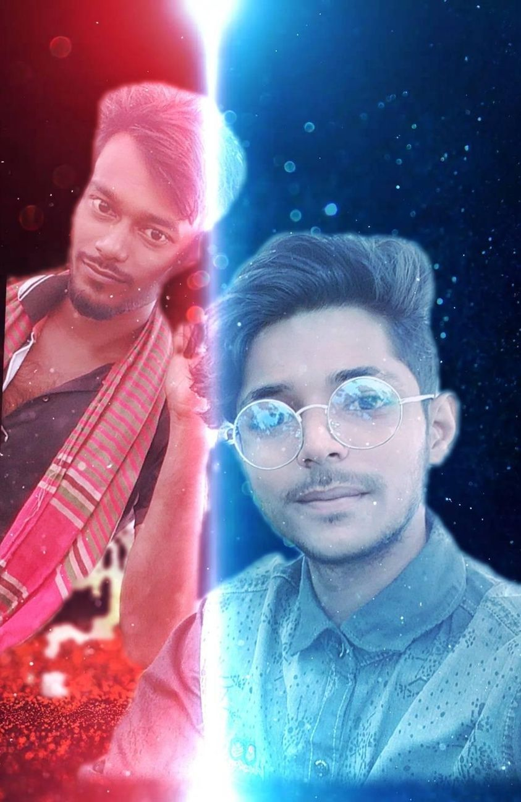 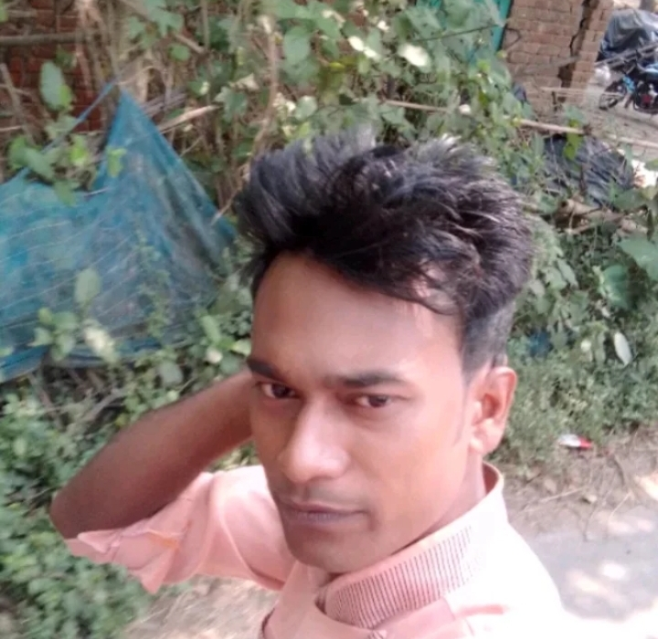 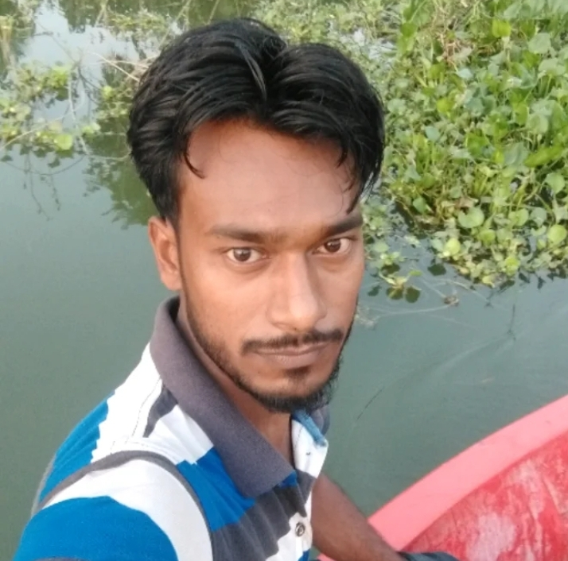